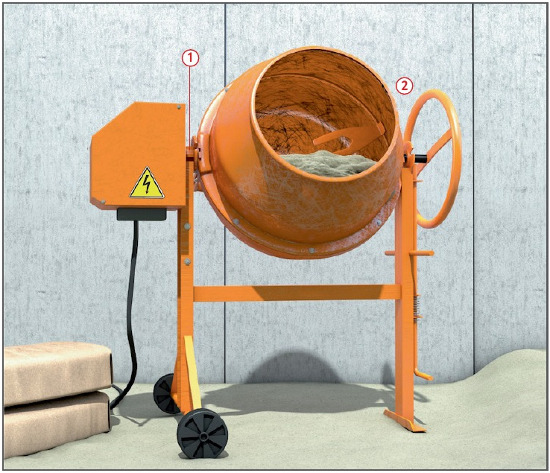
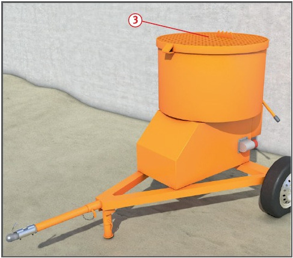
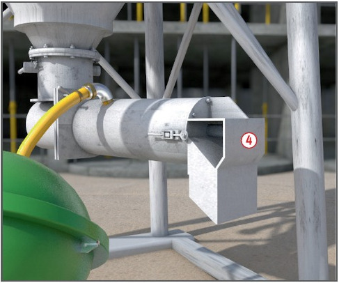

Gefährdungen
- Im Bereich der Mischeröffnung
kann es durch rotierende Werkzeuge
zu Unfällen kommen.
- Bei fehlendem besonderen
Anschlusspunkt kann es zu
einem Stromschlag kommen.
Schutzmaßnahmen
- Mischmaschinen eben und
standsicher aufstellen.
- Arbeitsplätze an Mischmaschinen gegen herabfallende
Gegenstände schützen.
- Elektrisch betriebene Mischmaschinen
nur über einen
besonderen Anschlusspunkt mit
Schutzmaßnahme anschließen.
Als besonderer Anschlusspunkt
gilt z.B. Baustromverteiler mit
FI-Schutzeinrichtung (RCD).
- Durch Probelauf Drehrichtung
der Mischwerkzeuge überprüfen.
- Bei Instandhaltungsarbeiten
Antriebe stillsetzen und gegen
Wiedereinschalten sichern.
Bedienungsanleitung des Herstellers
beachten. Berührungsschutz
an Verbrennungsmotoren
und Auspuffanlagen nicht entfernen.
- Durchführung von Unterweisung
und Einweisung des Bedieners
anhand der Betriebsanweisung/Betriebsanleitung des
Herstellers.
Zusätzliche Hinweise für Freifallmischer
- Die Einzugsstellen an den
Antriebsrädern, insbesondere
zwischen Antriebszahnrad- und
Trommelzahnkranz, müssen
verdeckt sein
 .
.
- Nicht mit der Hand oder mit
Werkzeugen in die laufende
Trommel
 greifen.
greifen.
- Nach Keilriemenwechsel
Schutzabdeckung wieder anbringen.
Zusätzliche Hinweise für Tellermischer
- Die Einfüllöffnungen müssen
durch Verdeckungen
 gesichert
sein. Die Quetschstellen im
Mischgefäß dürfen nicht mit der
Hand erreichbar sein.
gesichert
sein. Die Quetschstellen im
Mischgefäß dürfen nicht mit der
Hand erreichbar sein.
- Beim Öffnen der Verdeckung
muss das Mischwerk zwangsläufig stillgesetzt und gegen
Wieder anlaufen gesichert sein.
- Die Auslauföffnungen müssen
durch einen Trichter oder ein
Schutzschild, jeweils versehen
mit einem Gitter, gesichert sein:
Gittermaschenweite max. 70 mm,
Abstand zur Quetschstelle mind.
150 mm. Bei einer Gittermaschenweite von 40 mm muss der Abstand
zur Quetschstelle mind.
120 mm betragen.
- Bei geöffneter Stellung der
Verdeckungen muss zwangsläufig verhindert sein, dass die
Mischwerkzeuge wieder anlaufen
können. Die Verdeckung so
sichern, dass sie nicht unbeabsichtigt
zufallen kann.
Zusätzliche Hinweise für Stetigmischer
- Beim Befüllen mit Sackware
muss die Einfüllöffnung wie bei
den Tellermischern durch Verdeckungen gesichert bleiben.
- Die Auslauföffnung muss
durch Auslauftrichter
 gegen
Hineingreifen gesichert bleiben. Die Auslauföffnung darf nicht
mehr als 90 cm vom Boden angeordnet sein.
gegen
Hineingreifen gesichert bleiben. Die Auslauföffnung darf nicht
mehr als 90 cm vom Boden angeordnet sein.
- Vor dem Abnehmen des
Mischrohres Antrieb abstellen
bzw. Maschine vom Netz trennen.
Prüfungen
- Art, Umfang und Fristen erforderlicher
Prüfungen festlegen
(Gefährdungsbeurteilung) und
einhalten, z. B.:
- vor jeder Arbeitsschicht auf
augenscheinliche Mängel,
- nach Bedarf, mind. 1 x jährlich
durch eine „zur Prüfung
befähigte Person“ (z. B. Sachkundiger).
- Ergebnisse der regelmäßigen
Prüfung dokumentieren.


07/2021